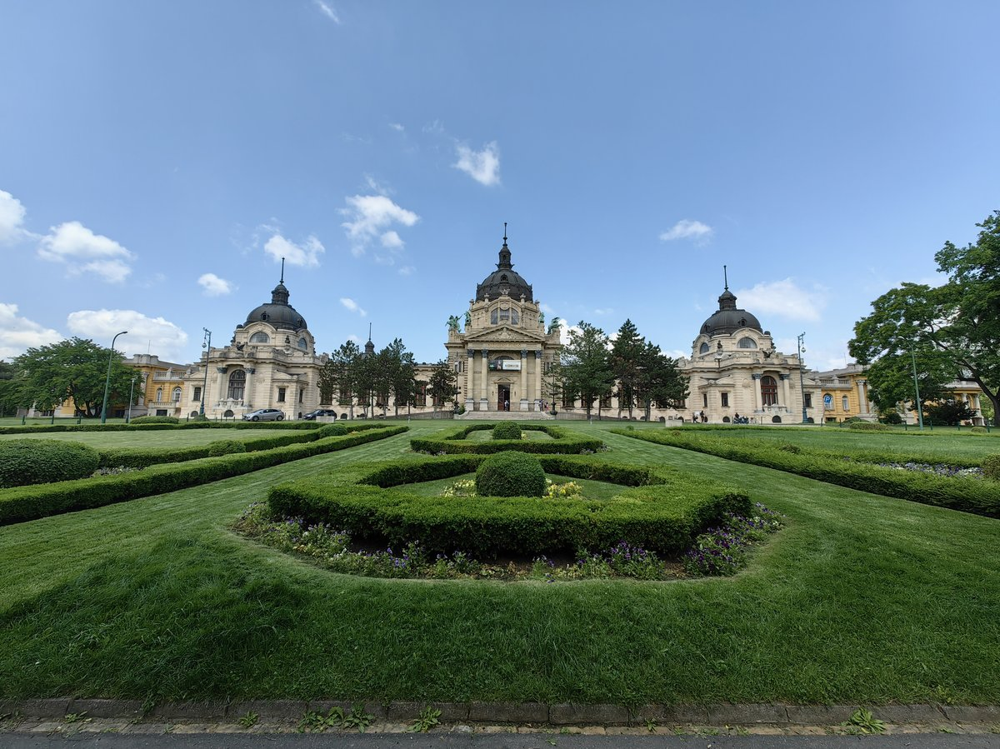
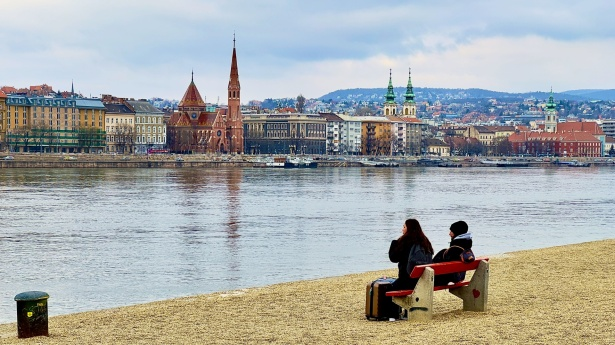

Hotel Continental Budapest
Dohány u. 42-44
Budapest
Fechas disponibles: 15 al 22 de Abril
Alojamientos
Hotel Danubius Hotel Astoria
Kossuth Lajos u. 19-21Hotel Bo33 Hotel Family & Suites
Szövetség u. 33Hotel InterContinental Budapest
Apáczai Csere János u. 12-14Itinerario
Día 1 - 15 de abril
- Llegada a Budapest y check-in en el hotel
- Paseo por el Danubio
- Puente de las Cadenas
- Cena en Pest
Día 2 - 16 de abril
- Parlamento de Budapest
- Bastión de los Pescadores
- Iglesia de Matías
- Tarde libre
Día 3 - 17 de abril
- Castillo de Buda
- Funicular de Buda
- Colina Gellért
- Baños termales Gellért
Día 4 - 18 de abril
- Gran Mercado Central
- Avenida Andrássy
- Ópera de Budapest
- Cena de grupo
Día 5 - 19 de abril
- Excursión al lago Balatón (opcional)
- Relax en el entorno natural
- Regreso a Budapest
Día 6 - 20 de abril
- Baños Széchenyi
- Parque de la Ciudad
- Castillo Vajdahunyad
Día 7 - 21 de abril
- Mañana libre para compras
- Paseo final por el Danubio
- Preparación de regreso
Día 8 - 22 de abril
- Regreso
Actividades

Culturales
- Parlamento de Budapest
- Castillo de Buda
- Bastión de los Pescadores

Aventuras
- Baños Széchenyi
- Baños Gellért

En naturaleza
- Danubio
- Colina Gellért
- Lago Balatón
Precios: Desde 1400 € a 2300 €